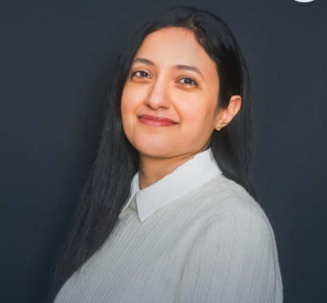
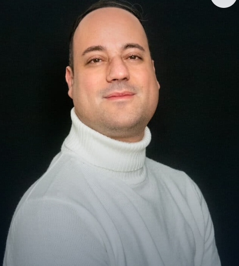
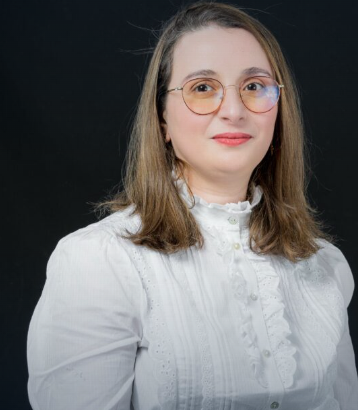
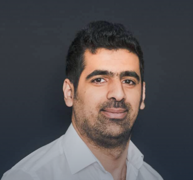

Des chercheurs et experts passionnés pour vous accompagner tout au long de votre parcours.
Survolez une carte pour découvrir le parcours de chaque enseignant




Les grandes thématiques portées par notre équipe
Apprentissage automatique, réseaux de neurones, vision par ordinateur et traitement du langage naturel. Collaborations avec des entreprises du secteur numérique.
Sécurité multimédia, cryptographie, analyse de vulnérabilités et protection des systèmes d'information. Recherches en lien avec le laboratoire PRISME.
Modélisation mathématique, équations différentielles et méthodes numériques appliquées aux sciences de l'ingénieur. Prix INDAM-SIMAI 2010.
Traitement de grandes masses de données, architectures distribuées et bases de données avancées. Applications dans l'industrie et la recherche collaborative.
Travaux récents de notre équipe enseignante
| Auteur(s) | Titre | Domaine | Année | Journal / Conférence |
|---|---|---|---|---|
| M. Hamidi | Sécurité multimédia et vision par ordinateur | Sécurité & IA | 2019 | Université Med V — Thèse |
| C. Ben Khelil | Thèse en cotutelle RIADI / LIFO | Informatique | 2019 | ENSI Manouba & Université d'Orléans |
| C. Bianca | Mathématiques pour les Sciences de l'Ingénieur | Mathématiques appliquées | 2008 | École Polytechnique de Turin |
| C. Bianca | Prix INDAM-SIMAI — Meilleure thèse de doctorat | Mathématiques | 2010 | INDAM-SIMAI (Italie) |
| A. Gabis | Doctorat en Informatique | Informatique | 2021 | ESI — École Nationale Supérieure d'Informatique |